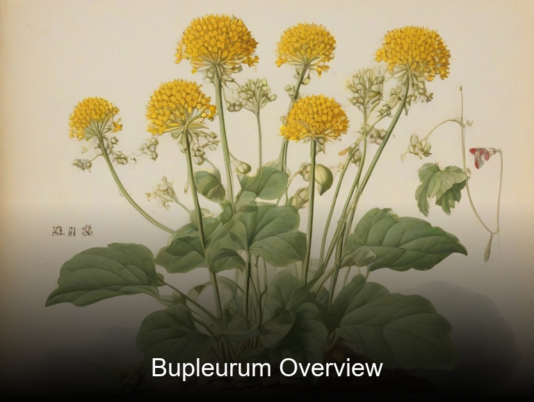
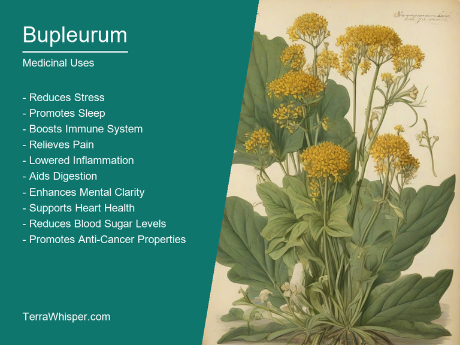
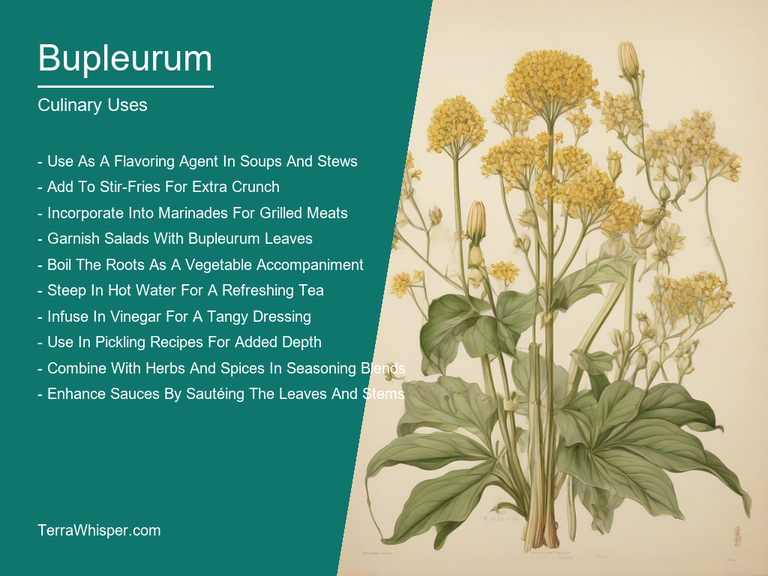
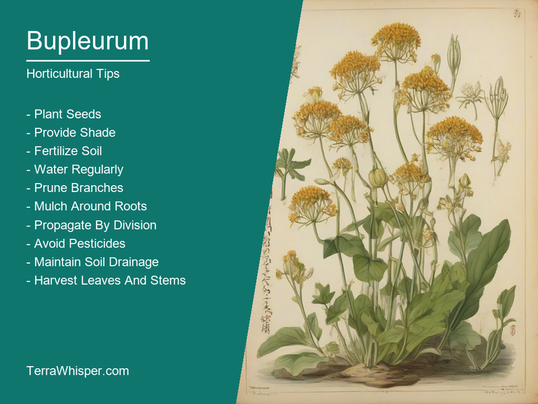
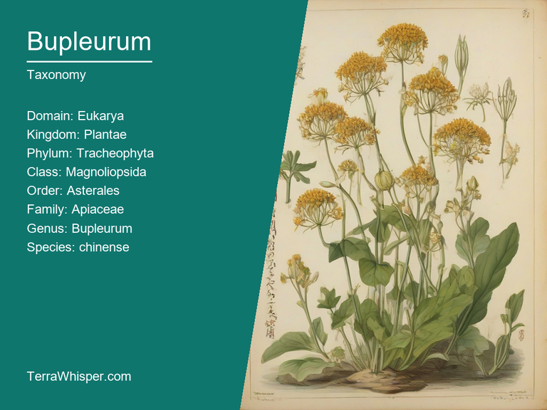
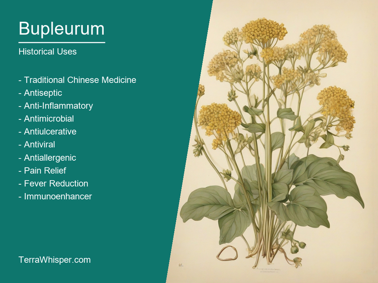

Bupleurum, scientifically know as Bupleurum chinense, is a plant native to China that has been used for centuries in traditional Chinese medicine. Its leaves, roots, and flowers are used for their medicinal properties, such as promoting digestion, reducing inflammation, and relieving pain. In addition to its medicinal uses, the plant is also edible and can be used in culinary dishes, particularly in Asian cuisine. The taste of Bupleurum is slightly bitter with a hint of sweetness, which complements various savory dishes.
As an ornamental plant, Bupleurum chinense boasts attractive foliage that ranges from green to blue-gray in color and small, yellow flowers that bloom from early summer to late autumn. It's low maintenance and can thrive in a variety of soil types and conditions, making it suitable for both novice and experienced gardeners alike. Bupleurum is often used in mixed border plantings or as a filler in flower beds due to its compact growth habit and long bloom season.
Botanically speaking, Bupleurum chinense belongs to the Apiaceae family, which also includes carrots, parsley, and celery. The plant has been used in traditional Chinese medicine for over two thousand years, with records of its use dating back to the Han Dynasty. Today, it remains an important component of herbal remedies in China, Korea, and Japan. The historical significance of Bupleurum chinense cannot be understated, as it has been a staple in Asian medicine for centuries.
In this article, you will discover what are the medicinal and culinary uses of bupleurum. Then, you'll learn how to cultivate it, what is its botanical profile, and how it was used historically.
Bupleurum (Bupleurum chinense) has many health benefits. Traditional Chinese medicine has long recognized Bupleurum as an important herb with antiviral, antibacterial, and immune-stimulating properties. It is commonly used to treat various ailments such as colds, flu, digestive issues, respiratory problems, and skin conditions. Modern science now confirms the effectiveness of this plant in improving overall wellness through various mechanisms.
The following illustration lists the most important uses of bupleurum in medicine.

Bupleurum contains numerous beneficial constituents that contribute to its medicinal properties. Some key components include flavonoids, sterols, sesquiterpene lactones, volatile oils, and phenolic compounds. These substances work synergistically to provide a wide range of health benefits.
The most commonly used parts of the Bupleurum plant for medicinal purposes are its roots and aerial parts (leaves and stems). Roots of this herb can be prepared as decoctions, tinctures, or dried powders for oral consumption or external application. Aerial parts are often used to make infusions or extracts that can be ingested or applied topically.
Bupleurum may cause certain side effects in some individuals, such as allergic reactions, gastrointestinal issues, and potential drug interactions with specific medications. It is essential to consult a healthcare professional before incorporating this herb into one's treatment plan. Additionally, pregnant or breastfeeding women should avoid using Bupleurum due to the lack of sufficient safety data during these stages of life.
To ensure safe and effective use of Bupleurum, it is crucial to follow specific precautions. It is important to consult with a qualified herbalist or healthcare professional before incorporating this herb into one's daily routine. Proper dosage guidelines should be followed based on individual needs and medical conditions. Moreover, ensure that the product being used is from a reputable source and has been properly processed to maintain its potency and safety.
Bupleurum chinense, also known as Chinese Thoroughwax or simply Bupleurum, is a culinary plant commonly used for its unique flavor and versatile cooking applications. Its culinary uses range from being utilized as a condiment in dishes to offering medicinal benefits when consumed.
The following illustration lists the most common uses of bupleurum for culinary purposes.

The flavor profile of Bupleurum chinense can be described as a mix between sweetness, bitterness, and fresh fragrance. This combination makes it perfect for adding depth to both savory and sweet dishes. Its unique taste provides a refreshing contrast to other ingredients used in the same dish.
The edible parts of Bupleurum chinense include its stalk, young leaves, roots, seeds, and flowers. Each part has different culinary uses and health benefits. For instance, the tender young leaves can be added to salads or cooked as a vegetable while the roots are often used for their medicinal properties when brewed into tea.
Firstly, when using it as an ingredient in cooking, be mindful of the portion sizes needed so you can balance out its flavors with other ingredients in your dish. Secondly, the freshness of Bupleurum is essential for maintaining its potency and quality. Lastly, remember that it has a slight tendency to impart bitterness when overused or not properly paired with other flavors; experimenting with different combinations can help achieve a harmonious taste profile.
While Bupleurum chinense is generally safe for consumption, there may be potential side effects and toxicity if used incorrectly. Excessive intake could result in mild gastrointestinal distress or allergic reactions in some individuals. To minimize these risks, ensure that you follow appropriate guidelines when using this plant in your culinary endeavors.
Bupleurum chinense, commonly known as Chinese Thoroughwax, is a herbaceous perennial plant native to China and Korea. It belongs to the family Apiaceae and is widely cultivated for its medicinal properties. This plant can be grown in various ways depending on the purpose of cultivation - ornamental or medicinal.
The following illustration lists the most important tips to cutlitvate bupleurum.

To grow Bupleurum chinense, start with fresh seeds or divisions from an established plant. Sow the seeds indoors during late winter to early spring, approximately 6mm deep and maintain a temperature of around 15-20°C for germination. Transplant the seedlings outdoors after the last frost date in the spring. Divisions can be planted directly into their permanent position during early autumn or late winter.
The ideal growing conditions for Bupleurum chinense are full sun exposure, well-drained soil rich in organic matter, and a pH level between 6.0 and 7.5. To mimic its natural habitat, provide support by planting it alongside other perennials or shrubs where they can climb upwards.
Maintenance of Bupleurum chinense involves regular watering when the soil is dry but ensure not to overwater as this plant prefers moist but well-drained conditions. Fertilize with a balanced organic fertilizer once a year during early spring. Prune back any dead or damaged stems to promote new growth and keep the plant bushy and attractive.
Bupleurum, with botanical name Bupleurum chinense, belongs to the domain Eukarya, kingdom Plantae, phylum Tracheophyta, class Magnoliopsida, order Apiales, family Apiaceae, and genus Bupleurum. Common names include Chameleon-plant, Chinese Thoroughwort, and Woad-willow.
The following illustration display the botanical profile of bupleurum.

Bupleurum chinense is a herbaceous perennial plant that grows up to 1 meter tall. It has alternate leaves that are pinnately divided into linear segments with serrated edges. The flowering stems are densely covered in small yellowish green flowers, followed by elongated fruit capsules containing numerous small seeds.
Variants of Bupleurum chinense include subspecies such as Bupleurum chinense var. chinense and Bupleurum chinense var. japonica, which differ slightly in their morphological characteristics like leaf shape and size.
Geographically, Bupleurum chinense is native to East Asia, specifically China, Japan, and Korea where it can be found growing on dry hillsides, grasslands, and along roadsides. It prefers well-drained soils and full sun exposure.
Bupleurum chinense has a biennial life cycle, meaning it takes two years to complete its entire life process from germination to seed production. In the first year, the plant develops leaves and a rosette of basal leaves; in the second year, it bolts and produces flowers before dying. The seeds are dispersed by wind or animals.
The etymology of "Bupleurum" originates from two Latin words; 'buperus', which means an umbelliferous plant resembling goat's beard (Chrysanthemums) and the suffix '-rum'. Bupleurm is scientifically known as a Chinese species native to East Asian habitats, especially in China. The generic term was later combined with 'chinense', which identifies it explicitly relating from its origin - Chine or more commonly referred nowadays- China that significantly accounts for most of the world's production and trade regarding this plant family member today known as Bupleurum chinensis (previously labelled under scientific name Scrophulariaceae).
The following illustration lists the most well known historical uses of bupleurum.

Cultural significances are associated with their numerous healing properties. In traditional medicine practiced in various Asian countries, such herbal plants have been utilized for centuries to treat different ailments and health issues ranging from stomach troubles including indigestion or bloating up until chronic respiratory tract congestions like asthma attacks; due these valuable benefits Bupleurum has played an important role throughout history as not just regular use medication but also in rituals connected with religious ceremonies within diverse societies.
Myths and legends surrounding this plant are quite fascinating, one of which is the tale that tells about a man who got poisoned by snakes; luckily he found Bupleurum growing nearby his home – consuming it helped him survive ultimately ending up becoming known as 'The Snake Charmer'. In another storyline involving Chinese folklore legend King Mu's journey towards immortality, the plant was believed to give its users supernatural powers when ingested. These tales illustrate how overtime stories passed on by generations have shaped cultural perceptions about Bupleurum and their uses in various domains besides only health remedies - which still holds value up till date
Literature has also referenced the herb quite commonly during those ages; an ancient Chinese poem "Yuefu shijing" describes a scene where travelers consume roots of this plant for relief from thirst, showing that not just medical science valued it but even poets had great regard in using these natural wonders within their writings.
Lastly folk usage emphasizes the significance and appreciation accorded by different cultures throughout history – ranging across various uses including weaving textile material made of Bupleurum stalks for clothes to preparing tonics as food additive (especially during harsh winter) making these usages an integral part reflecting a broader perspective on their application beyond just medicinal purposes.